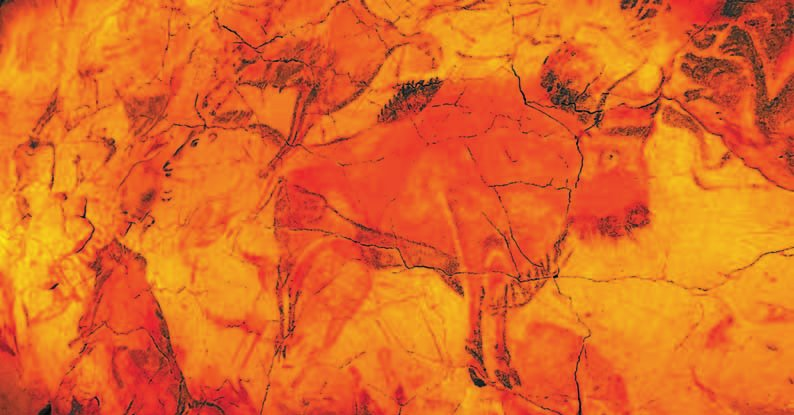
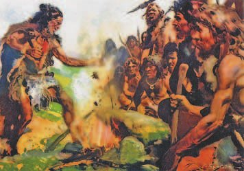
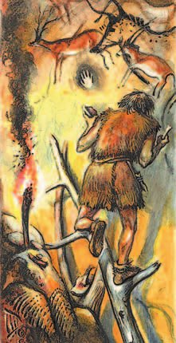
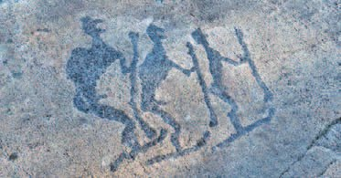
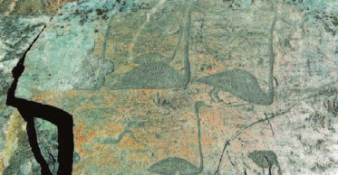

Знания
Жизнь охотников и собирателей была намертво связана с природой. Люди учились различать следы зверей и птиц, подражать их голосам, знать их повадки и места, где они живут.
Постепенно узнавали и травы: какая лечит. Умели останавливать кровь, залечивать раны, вправлять вывихи и давать противоядие при укусе змеи.
Заметили: времена года меняются вместе с тем, где стоит солнце и какие созвездия на небе. Так появились первые .
Жизнь охотников и собирателей была неразрывно связана с природой. Первобытные люди учились различать следы животных и птиц, подражать их голосам, определять места их обитания, распознавать повадки. Постепенно приобретались знания о свойствах растений, выделении среди них лечебных, из которых изготавливали различные снадобья. Первобытные люди примитивными методами умели останавливать кровотечения, залечивать раны, вправлять вывихи, применять противоядия при укусах ядовитых змей.
Древние люди установили связь между сменой времён года и положением солнца и созвездий на небосклоне. Наблюдение за движением небесных тел позволило выделить определённые циклы времени, составить первые .
Древнейшие календари нашли на стоянке Мальта под Иркутском (24 тысячи лет назад), на стоянке Мезин под Черниговом (20 тысяч лет назад) и на стоянке Гонцы (15—10 тысяч лет назад).
Человек открыл . До десяти считали, загибая пальцы рук, а если больше — шли в ход и пальцы ног. Расстояния мерили частями тела: ступнёй, локтем, пальцем, ногтем. А большие расстояния — полётом стрелы или копья и днями пути.
Письменности у людей каменного века не было. Она появится позже, вместе с обменом товарами, уже в бронзовом веке.
Древнейшие календари найдены на стоянке Мальта под Иркутском (24 тысячи лет назад), на стоянке Мезин близ Чернигова (20 тысяч лет назад), стоянке Гонцы (15—10 тысяч лет назад).
Человек, познавая мир, открыл . До десяти считали, загибая пальцы рук, когда число было большим, использовали и пальцы ног. Расстояния определяли с помощью длины частей человеческого тела: ступни, локтя, пальца, ногтя. Большие расстояния измеряли полётом стрелы, копья или днями пути.
Люди каменного века не знали письменности. Её возникновение связано с хозяйственной деятельностью человека, обменом товарами и произошло позднее, при переходе к бронзовому веку.
- Какими знаниями владел первобытный человек?
1. Почему первобытному человеку было важно уметь читать следы?
2. Как люди научились считать время, если часов и календарей не было?
3. Почему письменность появилась позже, чем счёт?
Верования
Первобытные люди считали, что внутри каждого человека живёт . После смерти душа уходит в загробный мир и живёт там почти так же: общинами, охотится, добывает еду.
Поэтому рядом с умершим клали его орудия труда, оружие и еду — пригодится там. А ещё фигурку богини Великой Матери: земле поклонялись как той, что даёт жизнь. Учёные выяснили, что хоронить с обрядом люди начали ещё с неандертальцев.
Люди верили, что душа есть у всего: у горы, у дерева, у медведя. С ними разговаривали и договаривались.
Многие считали, что их род произошёл от какого-то зверя, и звали его своим предком. Такое животное называли .
Первобытные люди считали, что в каждом человеке обитает сверхъестественная сущность — . После смерти человека душа переселяется в загробный мир, где так же, как и на Земле, живут общинами, охотятся, добывают пищу. Рядом с умершим сородичи клали орудия труда и оружие, которыми он пользовался при жизни, продукты. Со времени поклонения земле — дарительнице жизни её изображения в виде фигурки богини Великой Матери также помещали в погребение. Учёные установили, что, начиная с неандертальцев, люди начали совершать погребальные обряды.
Первобытные люди считали, что в мире всё живое и всё имеет душу. С горами, деревьями, животными и птицами они разговаривали и договаривались с ними. Душа человека для них ничем не отличалась от души горы, медведя или дерева.
Многие народы верили, что происходят от какого-то вида животных, и считали их своими предками. Такое животное называлось .
Весь мир вокруг — землю, воду, небо — люди населили . Считали, что духи могущественные и управляют жизнью всего живого.
Дождь, гром, гроза, молния, ветер, ураган, солнце, луна, звёзды — всё это для древнего человека было делом духов. У каждого явления свой дух, как у человека своя душа. Так родилась . Самых сильных духов со временем стали называть .
Окружающий мир — землю, воду, небо — древние люди населили , которых наделили могуществом и способностью управлять жизнью живых существ. Атмосферные явления (дождь, гром, гроза, молния, ветер, ураган), небесные светила (солнце, луна, звёзды) и их движение по небу древний человек воспринимал как деятельность духов. Считалось, что у каждого явления в природе есть дух, как в теле человека есть душа. Так зародилась . Наиболее могущественных духов первобытные люди выделяли и со временем стали называть их .

В первобытном обществе появилась — колдовство. Верили, что есть особые люди — , колдун, — которые умеют говорить с духами. Для этого нужны особые приёмы: , жертвоприношения и заклинания.
Обрядами и жертвами духов пытались задобрить, чтобы те помогли. Шаман вёл обряд: люди танцевали и произносили заклинания — например, чтобы охота была удачной.
Охотники кружились в танце вокруг изображения зверя, начерченного на земле, а потом протыкали его копьями и стрелами. Вера в поддержку доброго духа придавала людям отваги. К добрым духам шли и когда не было урожая или кто-то заболел.
Обряды проводили в особых местах — . Они бывали природными (роща, поляна) и рукотворными: люди ставили сооружения из громадных камней и каменных плит.
В первобытном обществе возникла (колдовство). Она основывалась на представлении об умении человека, наделённого особыми способностями (, колдун) и применявшего особые приёмы — , жертвоприношения и заклинания, общаться с духами. Магию связывали и с верой в человека, способного на расстоянии воздействовать на людей, животных, природные явления.
С помощью обрядов и жертвоприношений первобытные люди пытались задобрить духов окружающего мира, приобрести их расположение. Шаман организовывал и возглавлял специальные обряды, во время которых исполняли ритуальные танцы и произносили заклинания, например, чтобы обеспечить удачную охоту. Охотники вслед за шаманом кружились в танце вокруг изображения зверя, начертанного на земле, затем протыкали его копьями и стрелами. Уверенность в поддержке доброго духа придавала людям отвагу. За помощью к добрым духам обращались в случае неурожая, болезни сородича.
Религиозные обряды проводились в специальных местах — . Святилища могли быть как природными (рощи, поляны), так и рукотворными. Древние люди возводили сооружения из громадных камней или каменных плит.
- Объясните, с чем было связано возникновение в первобытном обществе религиозных верований.
4. Почему рядом с умершим клали орудия труда, оружие и еду?
5. Как из непонятного явления природы получался бог?
6. Зачем охотники протыкали копьями рисунок зверя на земле?
7. Чем тотем отличается от духа?
Искусство
Первобытного искусства нашли очень много: изображения зверей, нарисованные, вырезанные или процарапанные на камне и кости; маленькие скульптурки, в основном женские; узоры на орудиях труда и оружии.
Самое яркое — пещерная живопись: олени, быки, медведи и сцены охоты.
Оно представлено огромным количеством нарисованных, вырезанных или процарапанных на камне и кости изображений животных, небольшими скульптурными фигурками, в основном женскими, орнаментами на орудиях труда и оружии. Самое яркое явление первобытного искусства — пещерная живопись с изображениями оленей, быков, медведей и сцен охоты.

Первые многоцветные рисунки на стенах пещер открыла девочка девяти лет Мария де Саутуола. Её отец Марселино в 1879 году нашёл орудия древнего человека у входа в пещеру Альтамира в Испании. Он был не только археолог-любитель, но и художник: Марселино рисовал, а Мария пошла вглубь пещеры. В свете лампы девочка увидела изображения бизонов и позвала отца. Марселино уже видел гравировки на костях и рогах животных — потому сразу поверил, что это рисунки древнего человека.
Бизоны, олени, лошади и кабаны были нарисованы так искусно, что учёные отказывались верить: не мог первобытный человек так рисовать. Саутуола умер, не дождавшись признания. И только много лет спустя такие же рисунки нашли в Испании, Италии и Франции — и его признали первооткрывателем «живописи каменного века».
Наскальные рисунки нашли и в России — в Башкирии, в (другое название — Шульган-Таш, 400 километров к юго-востоку от Уфы). Там больше 170 рисунков. Нашли и камни, на которых древние художники растирали уголь, мел, жир, яйца и кровь животных, чтобы получить , и скребки из известняка.
Рисовали пучком травы, клочком шерсти или просто пальцем.
Бизоны, олени, лошади, кабаны, найденные Саутуолой, были изображены так искусно, что учёные отказывались признавать рисунки творением первобытного человека. Учёный умер, не получив заслуженного признания. Лишь много лет спустя подобные рисунки обнаружили в Испании, Италии, Франции, и Саутуолу признали первооткрывателем «живописи каменного века».
Вы уже знаете, что наскальные рисунки были обнаружены и на территории России, в Башкирии, в (другое название — Шульган-Таш, 400 километров к юго-востоку от Уфы). Здесь найдено более 170 рисунков, камни, на которых древние художники растирали уголь, мел, жир, яйца и кровь животных, получая , а также скребки из известняка и другие предметы. Древние художники выполняли рисунок пучком травы, клочком шерсти или просто пальцем.


Изобразительное искусство древних людей не ограничивалось рисунками на стенах пещер. Один из древнейших видов изображений — вырезанные на камнях . На берегу Онежского озера и в Залавруге (рядом с городом Беломорском) нашли больше тысячи вырезанных изображений: животные, люди, лодки, сцены охоты и ритуалов. Учёные датируют их 4—3 тысячелетиями до нашей эры — это древнейшие изображения на территории Европы. Там же обнаружили более 30 стоянок и при раскопках нашли свыше 200 тысяч предметов быта.
- Назовите образцы искусства первобытного человека.
8. Почему учёные сначала не поверили, что рисунки Альтамиры сделал первобытный человек?
9. Чем петроглифы отличаются от пещерной живописи?
10. Что общего у обряда перед охотой и у рисунков зверей на стенах?
Подведём итоги
- Какие верования зародились у древних людей? Какую роль они играли в жизни первобытного человека?
- Рассмотрите иллюстрации, на которых изображены рисунки первобытных людей. О чём свидетельствуют сюжеты этих рисунков?
- Подумайте, почему религиозные ритуалы первобытных людей носили коллективный характер.
- Что, по вашему мнению, повлияло на появление первобытного искусства? Какую роль оно играло в жизни древнего человека?
- С помощью дополнительных источников информации создайте электронную презентацию (не менее 3 слайдов) на тему «Памятники первобытного искусства на современной территории России». Представьте её перед одноклассниками.
Отрывок из книги «Золотая ветвь» английского путешественника XIX (19) века Дж. Фрэзера, который изучал историю религии.
Жители Восточной Африки полагали, что, подобно песчаным столбам во время смерчей, радуга во время тропических дождей была зловредным демоном. В ней видели пасть грозы. Люди говорили: «Радуга пришла напиться воды. Смотрите, кто-нибудь непременно умрёт насильственной или жестокой смертью». Играющим детям говорили: «Радуга пришла пить. Не играйте более, чтобы с вами не случилось какого-нибудь несчастья».
Сформулируй ответ на главный вопрос параграфа — что можно узнать о жизни первобытных людей по наскальным рисункам? Приведи два-три довода.
Проверь себя
1. Чем первобытные люди мерили расстояния?
2. Почему рядом с умершим клали орудия и еду?
3. Кто такой тотем?
4. Как появились боги?
5. Где в России нашли наскальные рисунки в пещере?
6. Из чего первобытные художники делали краску?
Расскажи вслух
Что знал первобытный человек
- Природа: следы и голоса зверей, их повадки и места обитания.
- Травы: какие лечат; умели остановить кровь, залечить рану, вправить вывих, дать противоядие.
- Небо и счёт: календари по солнцу и созвездиям, счёт на пальцах, мерки по частям тела.
Во что верили древние люди
- Душа есть у человека и у всего вокруг; после смерти она уходит в загробный мир — отсюда погребальные обряды с неандертальцев.
- Тотем — зверь-предок рода.
- Духи явлений природы, самые сильные — боги. Так зародилась религия.
Магия и шаман
- Магия — вера в то, что особый человек умеет говорить с духами.
- Приёмы: обряды, жертвоприношения, заклинания; танец вокруг изображения зверя перед охотой.
- Святилища — природные (роща, поляна) и рукотворные, из громадных камней.
Первобытное искусство
- Что это: рисунки на камне и кости, скульптурки, орнаменты на орудиях; самое яркое — пещерная живопись.
- Альтамира: девятилетняя Мария де Саутуола, 1879 год, и долгое непризнание её отца.
- В России: Капова пещера в Башкирии, петроглифы Карелии; краски из угля, мела, жира, яиц и крови.